DECISION TREE ( Pohon Keputusan)¶
Decision Tree¶
Pohon keputusan dalam aturan keputusan (decision rule) merupakan metodologi data mining yang banyak diterapkan sebagai solusi untuk klasifikasi. Decision tree merupakan suatu metode klasifikasi yang menggunakan struktur pohon, dimana setiap node merepresentasikan atribut dan cabangnya merepresentasikan nilai dari atribut, sedangkan daunnya digunakan untuk merepresentasikan kelas. Node teratas dari decision tree ini disebut dengan root.
Breiman et al. (1984) menyatakan bahwa metode ini merupakan metode yang sangat populer untuk digunakan karena hasil dari model yang terbentuk mudah untuk dipahami. Dinamakan pohon keputusan karena aturan yang terbentuk mirip dengan bentuk pohon. Pohon terbentuk dari proses pemilahan rekursif biner pada suatu gugus data sehingga nilai variabel respon pada setiap gugus data hasil pemilahan akan lebih homogen. Pada pohon keputusan terdapat tiga jenis node, antara lain :
1. Akar Merupakan node teratas, pada node ini tidak ada input dan dapat tidak mempunyai output atau dapat mempunyai output lebih dari satu. 2. Internal node**Merupakan node percabangan, pada node ini hanya terdapat satu input dan mempunyai output minimal dua. **3. Daun Merupakan node akhir atau terminal node, pada node ini hanya terdapat satu input dan tidak mempunyai output (simpul terminal).
Sebagai contoh suatu pohon disusun oleh simpul t1, t2, …, t4 dengan rincian terdapat 3 daun, 1 akar, dan 1 internal node. Setiap pemilah (split) memilah simpul nonterminal menjadi dua simpul yang saling lepas. Hasil prediksi respon suatu amatan terdapat pada simpul terminal (daun).
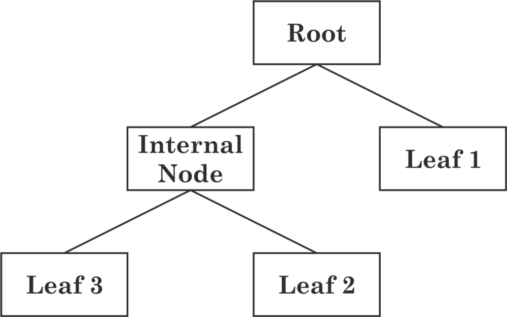
Konsep dari pohon keputusan adalah mengubah data menjadi pohon keputusan dan aturan-aturan keputusan. Pohon keputusan merupakan himpunan aturan if — then, dimana setiap path dalam pohon dihubungkan dengan sebuah aturan dimana premis terdiri atas sekumpulan node yang ditemui dan kesimpulan dari aturan terdiri atas kelas yang dihubungkan dengan daun dari path. Pembentukan pohon keputusan terdiri dari beberapa tahap :
1. Konstruksi pohon diawali dengan pembentukan akar (terletak paling atas). Kemudian data dibagi berdasarkan atribut-atribut yang cocok untuk dijadikan daun.
2. Pemangkasan pohon (tree pruning) yaitu mengidentifikasikan dan membuang cabang yang tidak diperlukan pada pohon yang telah terbentuk. Hal ini dikarenakan pohon keputusan yang dikontruksi dapat berukuran besar, maka dapat disederhanakan dengan melakukan pemangkasan berdasarkan nilai kepercayaan (confident level). Pemangkasan pohon dilakukan selain untuk pengurangan ukuran pohon juga bertujuan untuk mengurangi tingkat kesalahan prediksi pada kasus baru dari hasil pemecahan yang dilakukan dengan divide and conquer. Pruning ada dua pendekatan yaitu :
a. Pre-pruning yaitu menghentikan pembangunan suatu subtree lebih awal (dengan memutuskan untuk tidak lebih jauh mempartisi data training). Saat seketika berhenti, maka node berubah menjadi leaf (node akhir). Node akhir ini menjadi kelas yang paling sering muncul di antara subset sampel.
b. Post-pruning yaitu menyederhanakan tree dengan cara membuang beberapa cabang subtree setelah tree selesai dibangun. Node yang jarang dipotong akan menjadi leaf (node akhir) dengan kelas yang paling sering muncul.
3. Pembentukan aturan keputusan yaitu membuat aturan keputusan dari pohon yang telah dibentuk. Aturan tersebut dapat dalam bentuk if — then diturunkan dari pohon keputusan dengan melakukan penelusuran dari akar sampai ke daun. Untuk setiap simpul dan percabangannya akan diberikan di if, sedangkan nilai pada daun akan ditulis di then. Setelah semua aturan dibuat maka aturan dapat disederhanakan atau digabung.
Decision tree adalah suatu model klasifikasi yang paling populer karena mudah diinterpretasikan oleh manusia. Banyak algoritma yang dapat digunakan dalam pembentukan pohon keputusan seperti ID3, C4.5, CART, dan GUIDE. Algoritma decision tree banyak digunakan dalam proses data mining karena memiliki beberapa kelebihan :
1. Mudah mengintegrasikan dengan sistem basis data. 2. Memiliki ketelitian yang baik. 3. Dapat menemukan gabungan tak terduga dari suatu data. 4. Daerah pengambilan keputusan yang sebelumnya kompleks dan sangat global dapat diubah menjadi lebih sederhana dan spesifik. 5. Dapat melakukan eliminasi untuk perhitungan-perhitungan yang tidak diperlukan. Karena ketika menggunakan metode ini maka sampel hanya diuji berdasarkan kriteria atau kelas tertentu. 6. Fleksibel untuk memilih fitur dari internal node yang berbeda, fitur yang terpilih akan membedakan suatu kriteria dibandingkan kriteria yang lain dalam node yang sama.
Kekurangan pohon keputusan adalah.
- Terjadi overlap terutama ketika kelas-kelas dan kriteria yang digunakan jumlahnya sangat banyak. Hal tersebut juga dapat menyebabkan meningkatnya waktu pengambilan keputusan dan jumlah memori yang diperlukan.
- Pengakumulasian jumlah error dari setiap tingkat dalam sebuah pohon keputusan yang besar.
- Kesulitan dalam mendesain pohon keputusan yang optimal.
- Hasil kualitas keputusan yang didapatkan dari metode pohon keputusan sangat bergantung pada bagaimana pohon tersebut didesain.
Oke jadi bagaimana membangun ini ??
Perhitungan Algoritma Decision Tree¶
Ada beberapa algoritma di sana untuk membangun pohon keputusan, kita hanya membicarakan beberapa saja
- CART (Klasifikasi dan Pohon Regresi) → menggunakan Indeks Gini (Klasifikasi) sebagai metrik.
- ID3 (Iterative Dichotomiser 3) → menggunakan fungsi Entropi dan Penghasilan informasi sebagai metrik.
Mari kita bangun pohon keputusan untuk masalah klasifikasi menggunakan algoritma di atas,
Klasifikasi dengan menggunakan algoritma ID3 .¶
Mari kita ambil dataset terkenal di dunia pembelajaran mesin yaitu dataset cuaca (bermain game Y atau N berdasarkan kondisi cuaca).
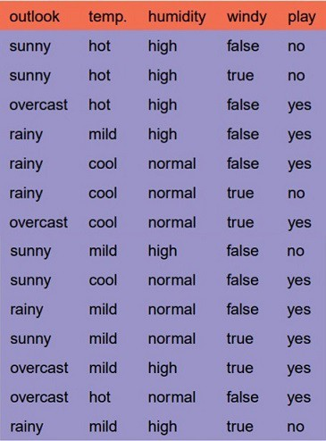
Disini terdapat empat nilai X (pandangan, temp, kelembaban dan berangin) menjadi kategoris dan satu nilai y (bermain Y atau N) juga menjadi kategoris.
jadi hanya perlu belajar pemetaan (apa yang selalu dipelajari dengan mesin) antara X dan y.
Ini adalah masalah klasifikasi biner, mari kita bangun pohon menggunakan algoritma ID3
Untuk membuat pohon, kita perlu memiliki simpul akar terlebih dahulu dan kita tahu bahwa simpul adalah fitur / atribut (pandangan, temp, kelembaban dan berangin),
jadi mana yang harus kita pilih dulu ??
Jawab : tentukan atribut yang paling mengklasifikasikan data pelatihan;gunakan atribut ini di akar pohon. Ulangi proses ini di untuk setiap cabang.
Ini berarti kami melakukan pencarian top-down, serakah melalui ruang pohon keputusan yang memungkinkan.
oke jadi bagaimana kita memilih atribut terbaik?
Jawab : gunakan atribut dengan perolehan informasi tertinggi di ID3
Untuk mendefinisikan perolehan informasi secara tepat, kita mulai dengan mendefinisikan ukuran yang biasa digunakan dalam teori informasi, yang disebut entropi yang mencirikan kemurnian (im) dari kumpulan contoh yang sewenang-wenang. ”
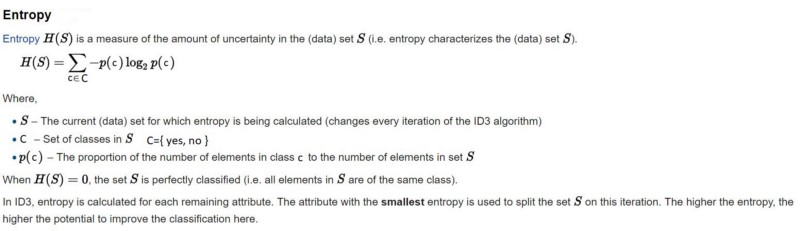
Untuk masalah klasifikasi biner
- Jika semua contoh positif atau semua negatif maka entropi akan menjadi nol yaitu, rendah.
- Jika setengah dari contoh adalah kelas positif dan setengah dari kelas negatif maka entropi adalah satu yaitu, tinggi.
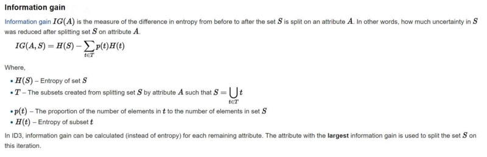
Oke mari terapkan metrik ini ke dataset kami untuk membagi data (mendapatkan simpul root)
Langkah - langkah:
1. menghitung entropi untuk kumpulan data 2. untuk setiap atribut / fitur: 1. menghitung entropi untuk semua nilai kategorikal 2.mengambil entropi informasi rata-rata untuk atribut saat ini 3. menghitung keuntungan untuk atribut saat ini 3. pilih atribut gain tertinggi. 4. Ulangi sampai kita mendapatkan pohon yang kita inginkan.
Hitung entropi untuk kumpulan data cuaca:
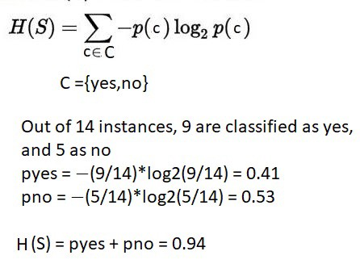
Untuk setiap fitur hitung entropi dan perolehan informasi
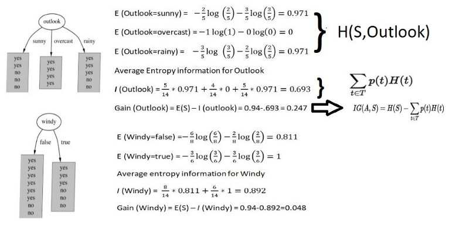
Kesamaan dapat di hitung untuk dua atribut lainnya (Kelembaban dan Temp).
Pilih atribut gain tertinggi.
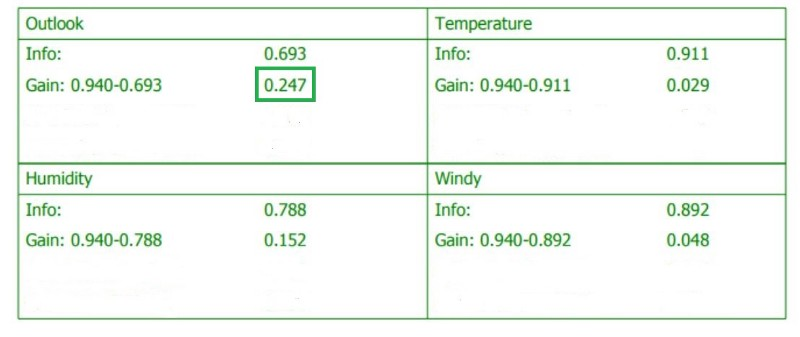
Jadi root node adalah Outlook.
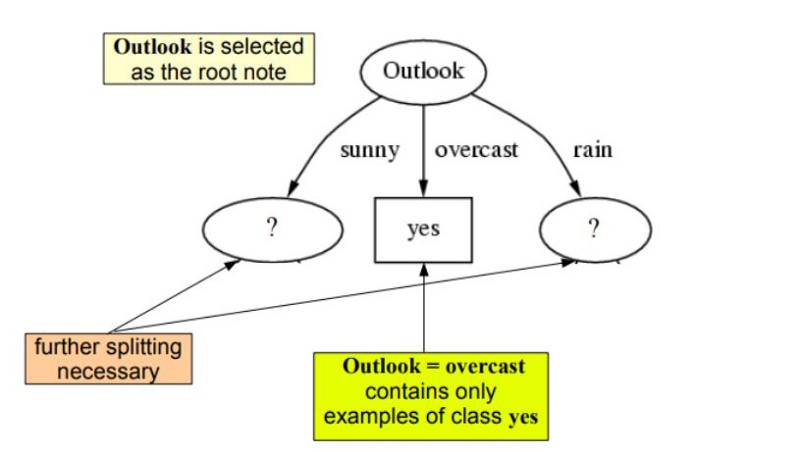
Ulangi hal yang sama untuk sub-pohon sampai mendapatkan pohonnya.
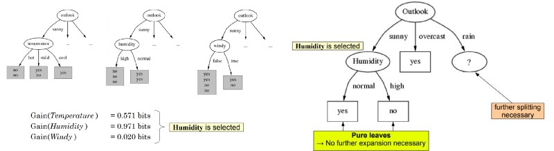
Sehingga mendapatkan pohon seperti itu.
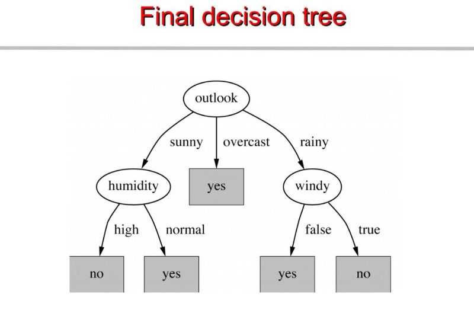
Implementasi¶
Library yang diperlukan¶
- Panda 0.20.3
- IPython
- Sklearn 0.19.1
- pydotplus
- graphviz
- Jupyter Notebook —-> gua pake ini untuk IDE nya
Untuk keseluruhan code nya dapat dilihat di bagian paling bawah tulisan ini
# Panda library untuk membaca file csv import pandas as pd DT_data = pd.read_csv("credit.csv",index_col=0) DT_data.head(5) DT_data.head(0) DT_data['RESPONSE'].head(5) DT_data.describe()
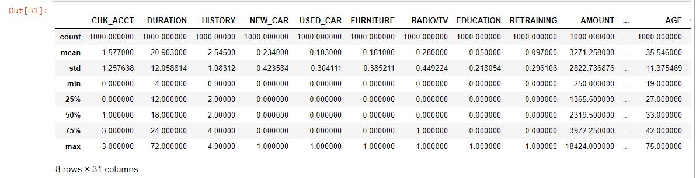
# Train / Test split DT_train=DT_data[0:700] DT_test=DT_data[700:1000] ''' X = DT_data.values[:, 1:31] Y = DT_data.values[:, 31] ''' x_vars=['CHK_ACCT', 'DURATION', 'HISTORY', 'NEW_CAR', 'USED_CAR', 'FURNITURE', 'RADIO/TV', 'EDUCATION', 'RETRAINING', 'AMOUNT', 'SAV_ACCT', 'EMPLOYMENT', 'INSTALL_RATE', 'MALE_DIV', 'MALE_SINGLE', 'MALE_MAR_or_WID', 'CO-APPLICANT', 'GUARANTOR', 'PRESENT_RESIDENT', 'REAL_ESTATE', 'PROP_UNKN_NONE', 'AGE', 'OTHER_INSTALL', 'RENT', 'OWN_RES', 'NUM_CREDITS', 'JOB', 'NUM_DEPENDENTS', 'TELEPHONE', 'FOREIGN']
# Proses mengembangkan decision tree from sklearn import tree cl_tree = tree.DecisionTreeClassifier(criterion='entropy', random_state = 100, max_depth=4, min_samples_leaf=15) cl_tree=cl_tree.fit(DT_train[x_vars], DT_train['RESPONSE']) pred=cl_tree.predict(DT_test[x_vars]) pd.crosstab(pred,DT_test['RESPONSE']) from sklearn.externals.six import StringIO from IPython.display import Image from sklearn.tree import export_graphviz import pydotplus dot_data = StringIO() export_graphviz(cl_tree, out_file=dot_data, feature_names=x_vars, filled=True, rounded=True, special_characters=True) graph = pydotplus.graph_from_dot_data(dot_data.getvalue()) # untuk mengeluarkan gambar hasil decision tree import graphviz Image(graph.create_png())
Maka hasil dari kode diatas adalah :
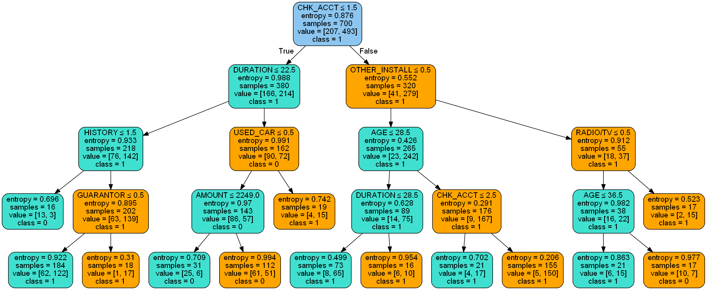